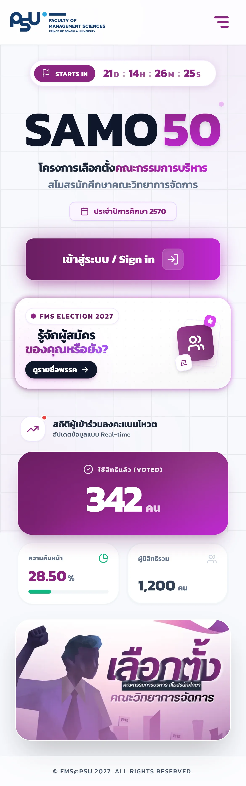
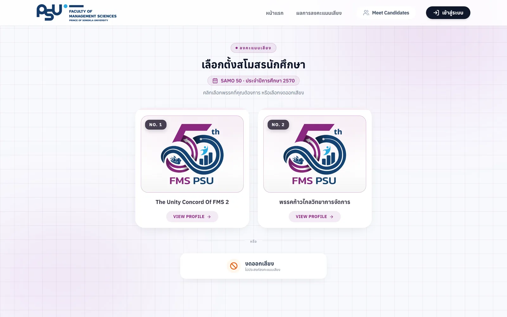
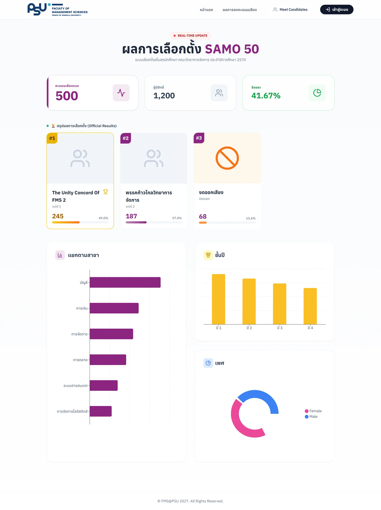
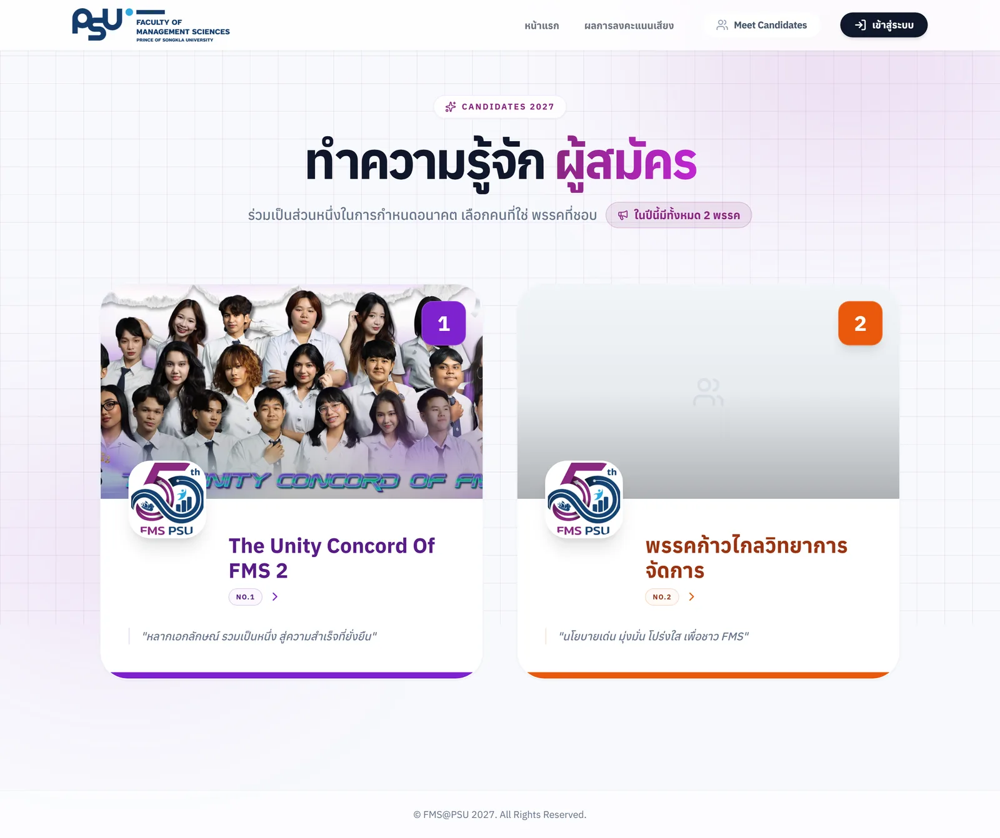
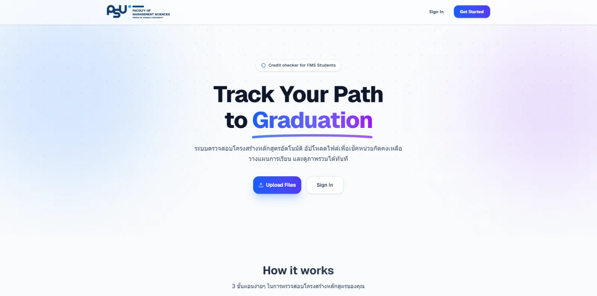
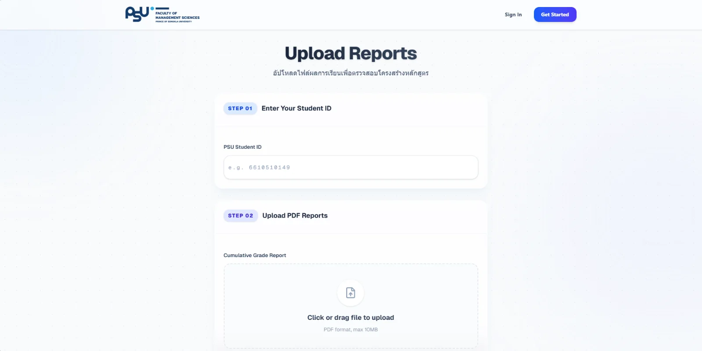
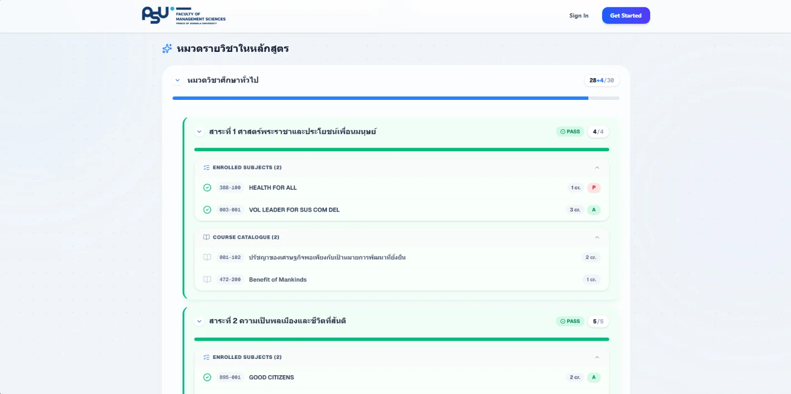
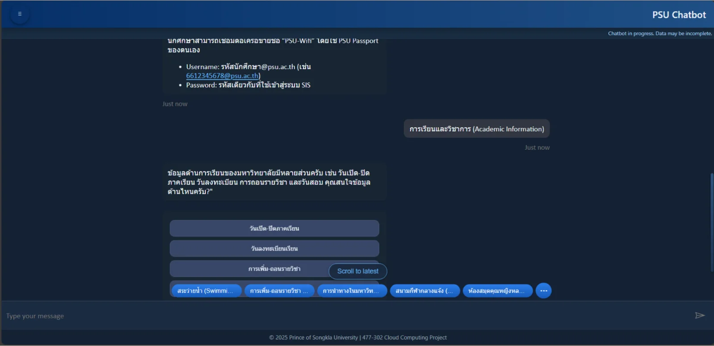
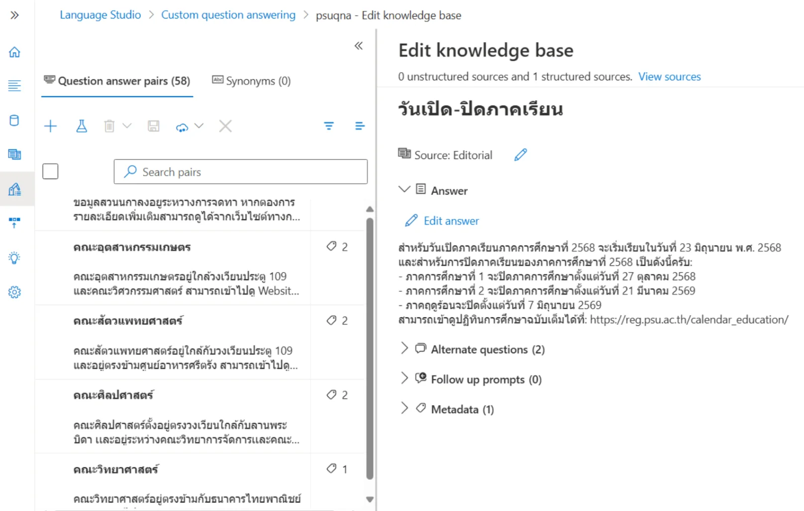
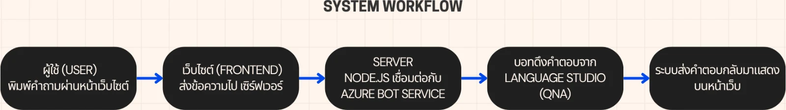

01 — About me
Teerapab Boonsri
Business Information Systems student at the Faculty of Management Sciences, Prince of Songkla University. I sit on the line between the people who use a system and the system itself — gathering requirements, drawing the flows and the data model, then building the thing and putting it live myself.
- Studying
- BBA, Business Information Systems
- University
- Prince of Songkla University · Hat Yai, since 2023
- Graduating
- Expected 2027 · GPAX 3.03
- Looking for
- Co-op internship · 16 Nov 2026 – 7 Mar 2027
System Analyst · Business Analyst · Management Trainee
02 — Where would you like to start?
Pick the one you care about
— or just keep scrolling
Voting System An election system the faculty actually runs, with 3,119 eligible voters System Analyst · Developer · UI/UX Live system 02 FMS Credit
Tracker Reads your transcript out of a PDF and works out what you still owe System Analyst · Full-stack · UI/UX 03 PSU
Chatbot A student-question bot on Azure, deployed and running around the clock System Analyst · Cloud · Front-end 04 Megu
Bot A Discord bot my friends use daily — I designed it, someone else wrote it Analysis and design only
Not sure? Keep scrolling — the whole thing reads top to bottom, and the contact details are at the end either way.
Co-op internship · 16 Nov 2026 – 7 Mar 2027
I design
systems people actually use

Four projects · one thread
On the first three I owned the whole cycle: sitting with users to collect requirements, designing the ER diagram and the business flows, then writing the code, building the UI and deploying it. On the fourth I did only the design half — and handed it to a developer.
Writing code is the tool that makes my system design sharper. It is not the destination I am aiming for.
Live system · Project 01
FMS Online Voting System
Not a screenshot — the interface rebuilt in plain HTML, breaking at the system's own widths
01
In real use · Dec 2025 – present

FMS Online
Voting System
System Analyst · Core Developer · UI/UX
The student council election system for the Faculty of Management Sciences, PSU, which I built alone. The hard part was never making a web page accept a vote — it was making the result provably untampered while making sure nobody can trace who voted for whom. Those two goals fight each other by nature, and almost every design decision in the system comes out of that conflict.


02
Course 477-303 BISA&D · Semester 2, 2025

FMS Credit
Tracker
System Analyst · Full-stack Developer · UI/UX
A credit tracker for students of the Faculty of Management Sciences. Students upload their grade report and registration slip as PDFs and the system reads the text out and checks it against the curriculum structure itself, showing which categories are complete and which are still short — instead of ticking boxes by hand in a table most people get wrong.


03
Course 477-302 Cloud Computing Platform · Oct 2025

PSU
Chatbot
System Analyst · Cloud Developer · Front-end
A chatbot that answers student questions, built on Azure Bot Service, wired to Language Studio, then embedded in a web page through the Direct Line API with a Node.js layer in between that trades the secret key for a token so the key never reaches the frontend · the whole thing runs around the clock on an Azure VM.


04
Side project with a friend · ongoing

Megu
Bot
System Analyst · Feature owner · not the developer
An all-round quality-of-life bot our Discord server uses every day: it speaks who joins and leaves a voice channel, reads out messages for people without a microphone, keeps per-person names, plays audio, and hides a few small games for the wait between matches. I designed the system and the features; my friend wrote the code. It is the project that looks most like the job I am applying for.


02 — What I am looking for
I want to sit between
the people and the system
First choice
System Analyst
Business Analyst
The closest match to what I have actually done — in every project here I started by collecting requirements, writing use cases, designing the ER diagram and setting the business rules before touching the first line of code. On MeguBot I did exactly this and then handed it to a developer. My advantage is that I can talk to developers on their own terms, because I have written it myself.
Second choice
Management Trainee
I study business administration, not engineering, so my view always starts from the organisation's problem. In group projects I am the one holding the overall picture and coordinating, which is why work that needs several parties moving at once suits me.
Also open to
Front-end · Full-stack
Web Developer
The UI of the voting system is the part I am proudest of — a 23-theme system switchable site-wide from the admin page, and every screen designed mobile-first. If the role is development, I can do it today; my long-term goal is simply systems analysis.
03 — Skills
What I actually used in the projects above
Business & Systems Analysis
How every project starts
- Requirement Analysis
- Business Process Flow
- Use Case Diagram
- Context Diagram
- ER Diagram
- System Logic Design
Experience Design
UI/UX & Prototyping
- Wireframing
- Figma
- Mobile-first Design
- Design System
- Accessibility
Web Development
What I build with
- Next.js
- React
- TypeScript
- JavaScript
- Tailwind CSS
- HTML · CSS
- Prisma
- PostgreSQL
Cloud & Delivery
Getting it live
- Microsoft Azure
- Azure Bot Service
- Azure VM
- API Integration
- Nginx
- Docker
- Git · GitHub
04 — Background
2023 – present
Prince of Songkla University · BBA
Business Information Systems, Faculty of Management Sciences · GPAX 3.03 · expected graduation 2027
Oct 2025
An Azure chatbot deployed for real use
Designed the conversation flow and the cloud architecture under a tight budget, finishing with a deploy to an Azure VM with HTTPS · the faculty's vice-dean, who taught the course, invited me to build the faculty's own chatbot on the strength of it — I had too much on at the time and never followed it up.
Dec 2025 – present
The student council election system
Collected requirements with the election committee and designed the threat model, the database and the way ballots are stored · imported 3,119 eligible voters through the university API with no bad records.
Semester 2, 2025
A credit tracker that reads transcripts itself
Designed the use cases, context diagram and ER diagram first, then built it as a Next.js + TypeScript web app with both a student side and a curriculum-admin side.
Something I always say plainly — I use AI as a thinking partner on every project, but the architecture, the security and the system design decisions are mine, and I keep a written record of the lessons I hit so I do not repeat them.
05 — Contact
I speak developer
and business
I am looking for a co-operative education internship from 16 November 2026 to 7 March 2027 as a System Analyst, Business Analyst or Management Trainee. Happy to go deep on any of the projects above, code included.
Business Information Systems · Prince of Songkla University
End of the portfolio — start of a conversation